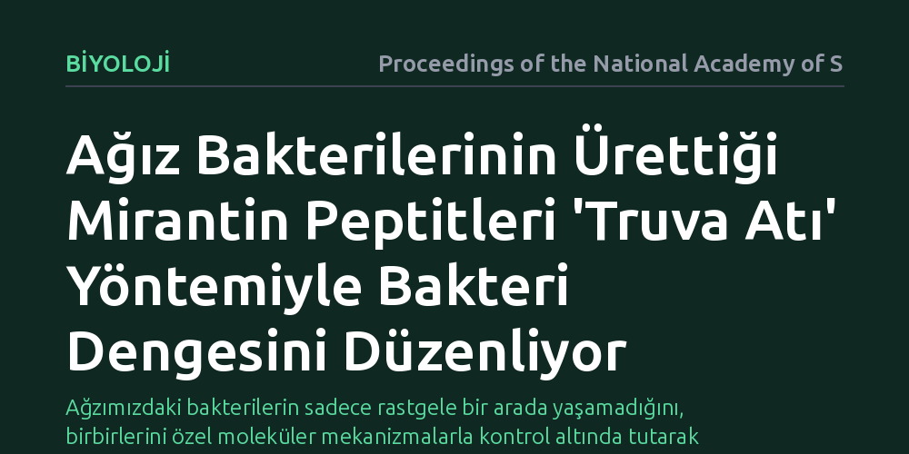

BIYOLOJI · Proceedings of the National Academy of Sciences · 2026-10-27
Araştırmacılar, insan ağız mikrobiyotasında keşfedilmemiş doğal molekülleri belirlemek için biyoinformatik yöntemlerle genetik verileri taradı. Çalışma sonucunda, 'mirantin' adı verilen ve hedef bakterilere gizlice sızarak bakteri dengesini düzenleyen yeni bir peptit ailesi tespit edildi.
Ağzımızdaki bakterilerin sadece rastgele bir arada yaşamadığını, birbirlerini özel moleküler mekanizmalarla kontrol altında tutarak mikrobiyal dengeyi sağladığını gösteriyor.

İnsan ağzı, yüzlerce farklı bakteri türünün bir arada yaşadığı son derece hareketli ve rekabetçi bir ekosistemdir. Ancak bu mikroorganizmaların birbiriyle nasıl etkileşime girdiği, hangi kimyasal sinyallerle haberleştiği veya birbirlerini nasıl denetim altında tuttuğu konusundaki bilgilerimiz halen oldukça sınırlıdır. İnsan mikrobiyotasında kodlanan doğal kimyasal ürünlerin sadece çok küçük bir bölümü bugüne kadar keşfedilebilmiş ve işlevsel olarak tanımlanabilmiştir.
Ağız florasındaki bu kimyasal cephaneliği aydınlatmak, yalnızca mikrobiyoloji alanındaki temel bir merakı gidermekle kalmıyor; aynı zamanda zararlı bakterilerin nasıl baskılandığını anlamamız açısından da kritik bir önem taşıyor. Eğer bakterilerin birbirini kontrol etmek için geliştirdiği bu doğal araçları çözebilirsek, geleneksel antibiyotiklerin tüm florayı yok eden yıkıcı etkisine mahkûm kalmadan hedef odaklı mikrobiyal çözümler geliştirmenin kapısını aralayabiliriz.
Araştırma ekibi, milyarlarca genetik harf arasında kaybolmak yerine, bilgisayar destekli biyoinformatik yöntemlerden yararlandı. Ağız mikrobiyotasında yer alan bakterilerin genom dizilimleri, özellikle ikincil metabolit ve peptit üretimiyle ilişkili gen kümelerini tespit edebilen özel algoritmalarla tarandı. Bu tarama sayesinde, daha önce işlevi bilinmeyen ve belirli peptit yapılarını kodladığı öngörülen yeni bir gen grubu izole edildi.
Bilgisayar başında yapılan bu öngörüler, laboratuvar ortamında gerçekleştirilen titiz deneylerle sınandı. Saptanan genetik talimatlara dayanılarak moleküller sentezlendi ve ağızda yaygın olarak bulunan farklı streptokok ve diğer bakteri suşları üzerine uygulandı. Araştırmacılar, bu moleküllerin bakterilerin büyüme hızlarını, hücre içi sinyal mekanizmalarını ve topluluk kompozisyonunu nasıl değiştirdiğini in vitro kültürlerde adım adım ölçümledi.
Yapılan analizler, araştırmacıların 'mirantin' adını verdiği yepyeni bir doğal peptit ailesini gün ışığına çıkardı. Mirantinlerin en dikkat çekici özelliği, hedef aldıkları bakterileri doğrudan dışarıdan parçalamak yerine bir 'Truva atı' stratejisi izlemeleriydi. Bakteriler bu peptitleri hücre zarlarındaki özel taşıyıcılar vasıtasıyla adeta besin veya olağan bir iletişim sinyali zannederek kendi içlerine alıyordu.
Hücre içine sızan mirantinler, bakterinin iç işleyişine müdahale ederek onun aşırı çoğalmasını engelliyor ve topluluk içindeki dengesini değiştiriyordu. Böylece mirantin üreten bakteriler, ortamdaki diğer mikrop türlerini toptan yok etmek yerine, onların popülasyonunu ince bir hassasiyetle dizginleyebiliyordu. Bu durum, ağız florasının karmaşık dengesini korumada bugüne kadar gözden kaçmış özgün bir mekanizmayı ortaya koydu.
Mirantinlerin keşfi, mikrobiyotayı anlamlandırma biçimimizde önemli bir dönüşüme işaret ediyor. Bakteriler arasındaki ilişkinin kaba bir yok etme mücadelesinden ziyade, oldukça rafine kimyasal modülatörlerle yürütülen bir denge yönetimi olduğunu anlıyoruz. Ağız içindeki mikrop dengesinin bozulması diş çürüklerinden diş eti hastalıklarına kadar pek çok sorunun temelini oluşturduğundan, bu doğal denetim araçlarının varlığı koruyucu mekanizmaları kavramamıza ışık tutuyor.
Bununla birlikte, bu bulgular henüz doğrudan klinik bir ilaca dönüşmüş değildir. Mirantinlerin sentetik türevlerinin ya da benzer mekanizmalara dayanan hedef odaklı moleküllerin geliştirilmesi, gelecekte sadece zararlı mikroorganizmaları hedefleyen akıllı antibakteriyel yaklaşımlara temel oluşturabilir. Doğanın milyonlarca yıldır kullandığı bu ince ayar mekanizmaları, mikrobiyom dostu tedavilerin yolunu aydınlatıyor.